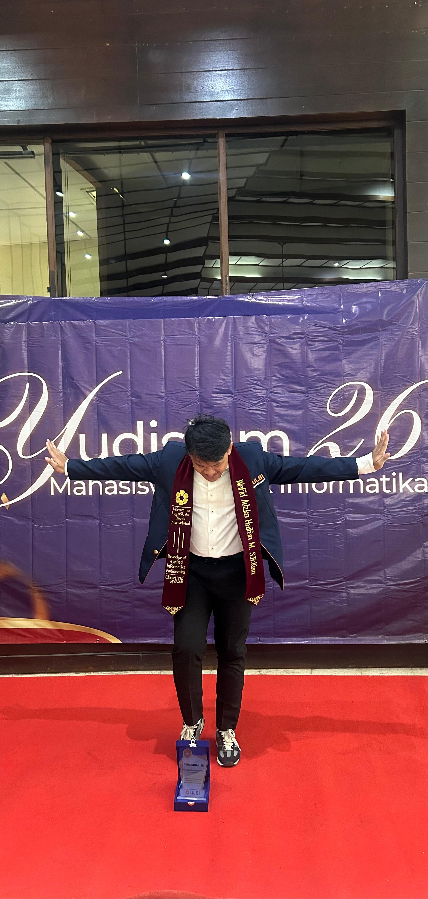

Kenalan dulu yuk 👋
Tentang Saya

Halo, Perkenalkan saya
Wafid Adzka Haifan Mukhayyar
Fresh graduate D4 Teknik Informatika yang telah menempuh pendidikan selama 8 semester di ULBI (Universitas Logistik & Bisnis Internasional), Bandung. Saya punya passion dalam membangun antarmuka yang rapi, nyaman dipakai, dan enak dilihat, sekaligus mengabadikan momen lewat kamera. Saat ini saya siap memulai karier dan terbuka untuk peluang baru.
💻 Frontend Development
🎨 UI/UX
⚙️ Software Engineering
📷 Fotografi
8
Semester
D4
Teknik Informatika
ULBI
Bandung, Jawa Barat
Biodata Pribadi
🧑
Nama
Wafid Adzka Haifan Mukhayyar
🎂
Tempat, Tanggal Lahir
Purwakarta, 21 Mei 2004
🚹
Jenis Kelamin
Laki-laki
☪️
Agama
Islam
📍
Alamat
Jl. Budhi VII, Sukaraja, Cicendo, Bandung